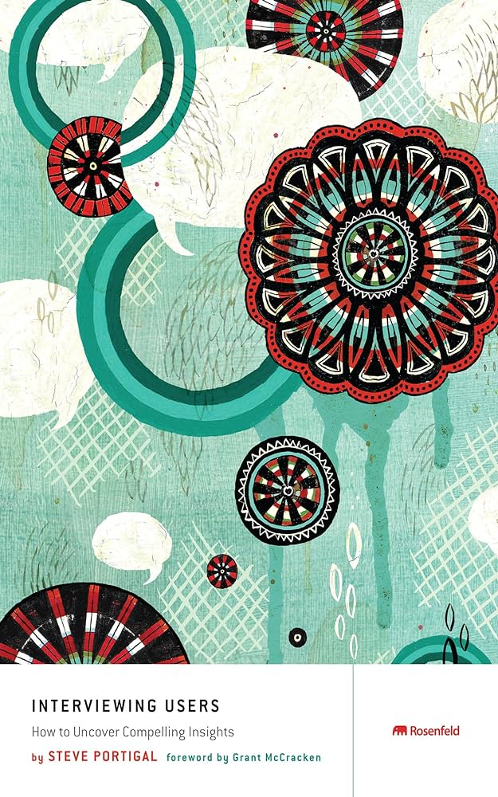

Waarom een Onderzoekende technoloog?
Ik heb gekozen voor onderzoekend technoloog omdat ik het proces van onderzoek doen interessant leek om te begrijpen, een half jaar gelden wist ik nog bijna helemaal niets van wat er bij het onderzoek proces komt kijken. Ik heb gekozen voor deze richting omdat ik wou weten waar ik op moet letten tijdens het onderzoek en hoe ik beter de informatie kan vinden die ik nodig heb om voor mijn onderwerp.
Wat heb ik bereikt?
Ik heb door de lessen van specialisme me veel gerichter onderzoek gedaan naar de doelgroep ook heb ik veel betere en doordachte interviews gehouden om mijn aan namens te valideren.
Nachtkastboek
Interviewing Users: How to Uncover Compelling Insights
Het boek gaat over de kunst van interviewen en hoe je de juiste vragen kan stellen aan de doelgroep er worden veel echte scenario’s gebruikt om goede voorbeelden te geven van lastige situaties.
Waarom heb ik dit boek gekozen?
Ik heb het boek Interviewing Users: How to Uncover Compelling Insights van Steve Portugal Gelezen Omdat ik mij zelf op het gebied van gerichte vragen stellen wou verbeteren.
Om eerlijk te zijn vond ik het boek erg saai en lang dradig er stond wel goed informatie in maar ik heb het boek met moeite door gelezen. Wel heb ik er een aantal dingen van opgepakt zoals het goed uitwerken van vragen voor af ook wel “interview guide” genoemd, deze heb ik ook meegenomen in het TLE project ook zou ik voor de volgende keer de “Observation Guid” graag meenemen in mijn user testing.
Andere inspiratie
Naast het boek heb ik ook op youtube video’s gekeken over interviewen ik vond de video “Target Market Interview Questions” erg interessant omdat hij de vraagstukken zo opstelden dat je goede kwaliteit antwoorden krijgt.
Hoe kijk ik terug?
Ik begon deze richting met weinig kennis over het onderzoek proces maar na maten ik meer onderzoek deed en de specialisme me lessen volgeden werd ik steeds beter in het vinden van de informatie waar ik naar opzoek was ook door het lezen van het boek en kijken van YouTube video’s over interviewen heb ik beter vragen kunnen stellen aan de doelgroep tijdens TLE ik heb veel geleerd dit afgelopen half jaar en ben blij dat ik de richting onderzoekende technoloog heb gekozen.
Wat onderscheidt mij van andere Ondernemende technologen?
Ik heb me erg verdiept in hoe ik goede interviews kan geven doormaten van het boek dat ik heb gelezen en de video’s hierdoor ben ik erg gericht geweest met de vragen die ik heb opgesteld en gevraagd heb aan de doelgroep.
Welke aanbevelingen geef ik mijn toekomstige zelf mee?
Ik zou in het vervolg meer gebruik willen maken van meer sites en resources om beter en sneller bronnen te kunnen vinden tijdens mijn onderzoek.
Wat ga ik met deze informatie doen in het vervolg van mijn studie?
Ik ga de geleerden skills inzetten tijdens mijn stage en vervolg opdrachten om zo beter bewijs documentatie neer te zetten met goede bronnen.